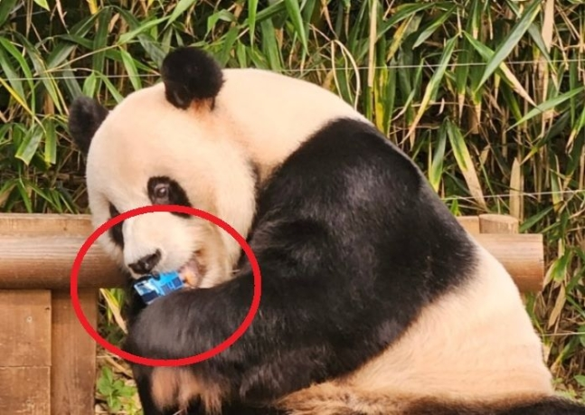

에버랜드 스타판다 ‘러바오’가 최근 방사장에 떨어진 어린이 장난감을 먹이로 착각하고 깨물어 먹으려고 시도하는 아찔한 상황이 연출됐다. 다행히 직원의 발빠른 대처로 상황은 무사히 종료됐으며, 장난감을 떨어뜨린 어린이의 부모는 에버랜드 측에 메일을 보내 사과의 뜻을 전한 것으로 알려졌다. 에버랜드 판다들을 돌보고 있는 송영관 사육사는 28일 동물원 공식 카페인 ‘주토피아’에 글을 올려 “고객의 소리 함을 통해 한 통의 메일을 전달받았다”며 “한 아이의 어머님이 쓰신 메일”이라고 운을 뗐다.
해당 메일은 판다 ‘러바오’와 ‘푸바오’를 만나기 위해 동물원을 방문한 아이가 목마를 탄 상태에서 장난감을 러바오의 방사장에 떨어뜨렸다는 내용이었다. 실제로 지난 26일 해당 동물원에서 아버지에게 안겨 관람하던 아이가 판다 방사장 안으로 파란색 버스 모양 장난감을 떨어뜨리는 일이 발생했다. 이를 본 러바오가 장난감을 집어 물었는데 다행히 삼키진 않았다. 다른 관람객들이 직원에게 이 사실을 알렸고, 직원이 러바오를 내실로 들여보내면서 상황은 일단락됐다. 이런 목격담과 현장 사진·영상 등이 온라인에 전해지면서 판다 안전 우려가 제기됐다.